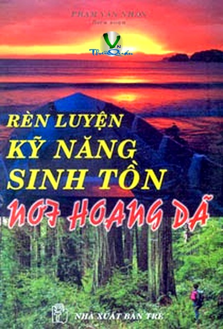

« Back
Sinh Tồn Nơi Hoang Dã
By Phạm Văn Nhân

Lời Nói Đầu
Đối Diện
Chuẩn Bị Vào Nơi Hoang Dã
Vật Dụng Mang Theo
Thất Lạc Trong Rừng
Tai Nạn
Liên Lạc Với Phi Cơ
Truyền Tin
Trôi Dạt Trên Biển
Sa Mạc
Băng Tuyết
Đầm Lầy
Vượt Sông Suối
Vượt Đồi Núi
Leo Vách Đá
Tìm Phương Hướng
Đọc Và Sử Dụng Bản Đồ
Nước
Lửa
Thực Phẩm
Săn Bắn
Đánh Bắt
Đánh Bắt Dưới Nước
Nấu Nướng
Bảo Quản Thực Phẩm
Nơi Trú Ẩn
Dây - Lạt - Nút Dây
Tổ Chức Cuộc Sống Nơi Hoang Dã
Thiên Nhiên Nguy Hiểm
Bảo Vệ Sức Khoẻ
Cấp Cứu